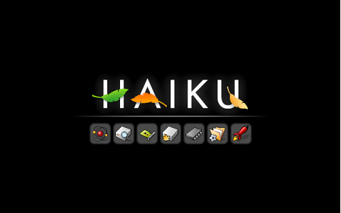

Starthanteraren
Haiku's starthanterare kan hjälpa när du har hårdvarurelaterade problem eller vill välja vilken Haikuinstallation du vill starta, om du har mer än en (kanske på en installations-CD eller ett USB-minne). Det är också användbart efter att man installerat en mjukvarukomponent som krånglar och som hindrar dig från att starta systemet, se artikel om Felsökning.
För att få fram valen i starthanterare måste du trycka på, och fortsätta hålla ner tangenten SKIFT innan Haikus startprocess. Om du har en boot manager installerad kan du börja hålla ner SKIFT innan du väljer att starta Haiku. Om Haiku är det enda installerade operativsystemet på datorn kan du börja hålla ner tangenten när du fortfarande ser startmeddelanden från BIOS.
Med datorer som använder UEFI för att starta i stället för den klassiska BIOS, måste du använda MELLANSLAG i stället för SKIFT.
 Starthanterarens alternativ
Starthanterarens alternativ
När den kommit fram erbjuds du fyra menyer:
| Select boot volume/state | Välj vilken Haikuinstallation/typvärde du vill starta (se artikel om Felsökning nedan). | |
| Select safe mode options | Det finns flera alternativ att prova om det skulle uppstå hårdvarurelaterade problem eller systemet blir instabil eller hindrar dig att starta det eftersom någon tillägg bär sig dåligt. När du flyttar markeringen mellan alternativen dyker en kort förklaring upp längst ner på skärmen. | |
|
| ||
| Select debug options | Här hittar du flera alternativ som är användbara för felsökning eller för att få detaljer till en buggrapport. Som förut visas en kort förklaring för varje alternativ längst ner på skärmen. | |
|
| ||
| Om är aktiverad, varm omstart efter krasch visar vissa ytterliga alternativ: | ||
|
| ||
| Select screen resolution | Låter dig att tvinga en viss skärmupplösning och färgdjup. |
Felsökning
Om Haiku startar inte din hårdvara från första början, prova att inställa olika alternativ inom . Tänk på fylla i en buggrapport i alla fall.
Å andra sidan, om Haiku bara plötsligt missköter sig efter du har installerat någon mjukvara, särkilt hårdvara drivrutiner, har du flera alternativ att göra Haiku bootbar igen så att du kan ta bort det kränkande paketet:
Aktivering vill hindra de flesta servrarna, bakgrundsprocesserna och UserBootscript för att starta.
Aktivering vill hindra att använda något tillägg (drivrutiner, översättare, osv.) som du har inställt i kataloghierarkin för användaren nedanför din Home-katalog.
Om aktivering av löser dina problem genom att komma tillbaka till VESA grafik, kan du göra inställningen permanent genom att ta bort # från radet #fail_safe_video_mode true i textfil /boot/home/config/settings/kernel/drivers/kernel.
Om en kränkande drivrutin, tillägg osv. är inställd på en hierarki av systemet, things get a bit more complicated, because that area is read-only. Here, the comes into play. With it, you can navigate through the whole system hierarchy and disable the component that's messing things up for you by checking an entry with the SPACE or RETURN key. ESC returns you up one level to the parent directory.
Online, there's the guide Disabling components of packages showing how to make that setting stick.
Under you can specify what former "version" of Haiku to boot. Every time you un/install a package, the old state is saved and you can boot into it by choosing it from the list presented in the boot loader options.
So, if you encounter boot problems after installing some package, boot a Haiku state from before that time and uninstall the offending package. You can permanently revert to a specific Haiku revision as described in the topic SoftwareUpdater.
Att starta Haiku
Efter att du aktiverat ett eller flera val återvänder du till huvudmenyn och fortsätter med startprocessen som visar dig denna skärm:
Om allt är OK tänds symbolerna snabbt, en efter en.
De olika symbolerna motsvarar ungefärligt dessa i steg startsprocessen:
| Atom | Initierar moduler. | |
| Hårddisk + förstoringsglas | Skapar rootfs (/) och monterar devfs (/dev). | |
| Kretskort | Initierar enhetshanteraren. | |
| Startdisk | Monterar startdisk. | |
| Chip | Laddar CPU-specifika moduler. | |
| Mapp | Slutgiltig initiering av delsystem. | |
| Raket | Launch_daemon har startar systemet. |